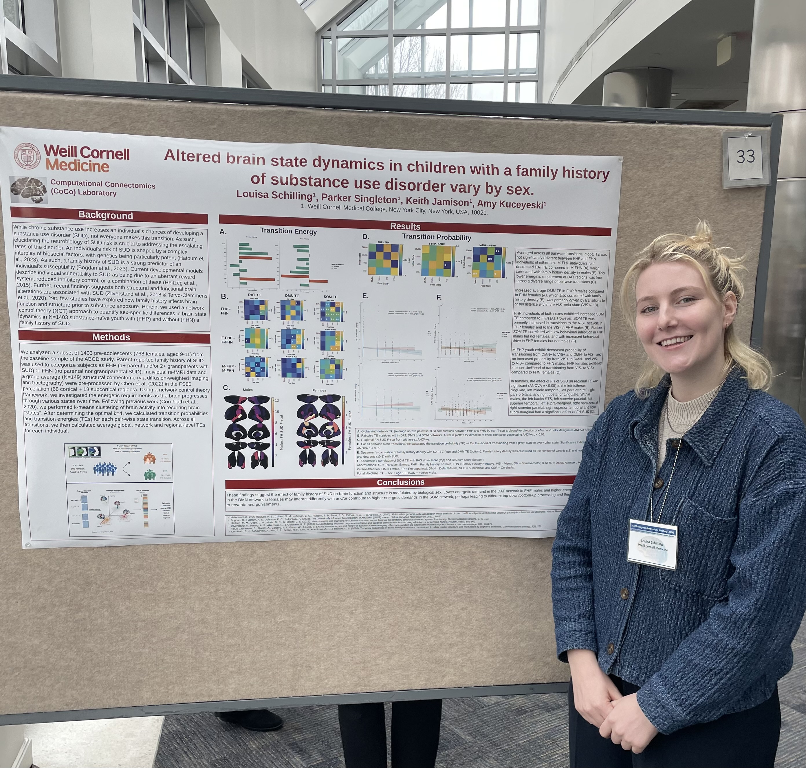

Selected Conference Presentations
Organization of Human Brain Mapping (OHBM) Annual Meeting — Brisbane, Australia
2025 · Oral Presentation
Network Control Theory and Substance Use Disorder

Organization of Human Brain Mapping (OHBM) Annual Meeting
Seoul, South Korea · 2024

ABCD Insights & Innovations Meeting (AIIM)
Bethesda, MD · 2024
Organization of Human Brain Mapping (OHBM) Annual Meeting
Montreal, QC · 2023